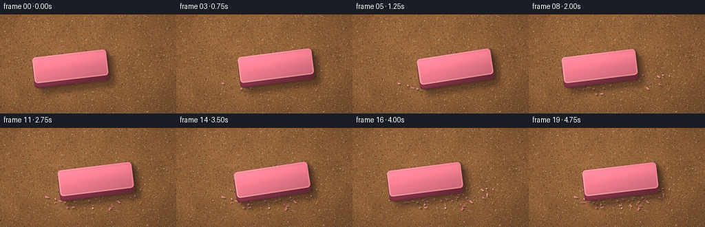
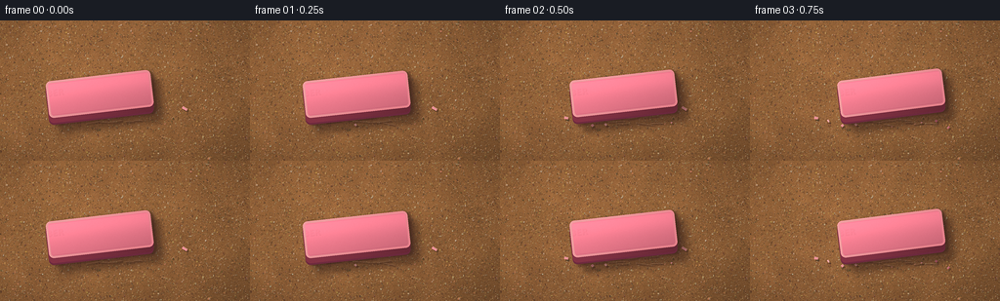
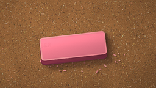
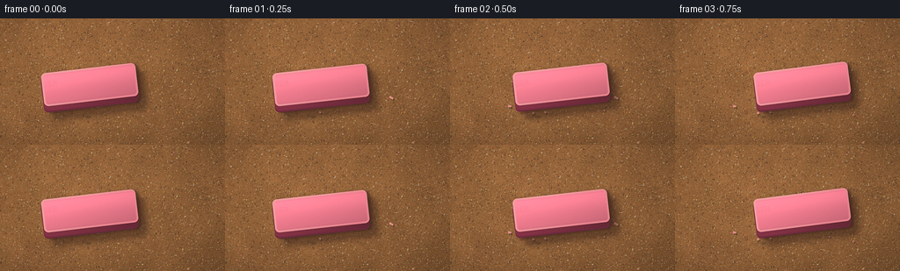
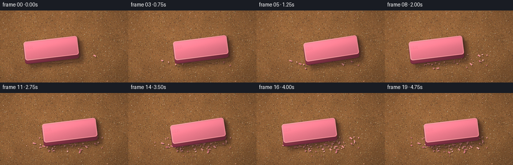
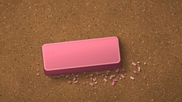

CODING AGENTS AS PIXEL WORLD MODELS
traex/DeepSeek-V4.1-Flash · material_0016
点击播放 · 原生 RGB 像素
逐轮保存的候选
回放视频、检查图与代码变化。
每份候选均可单独播放。实际图片检查记录在下方工具轨迹中。
候选 01播放与检查图
点击播放 · 原生 RGB 像素

展开代码变化
--- 上一保存版本
+++ 本次保存版本
@@ -0,0 +1,360 @@
+from pathlib import Path
+
+import numpy as np
+from PIL import Image, ImageDraw, ImageFilter
+from scipy.ndimage import gaussian_filter, shift
+
+import artifact_io
+
+
+WIDTH = 256
+HEIGHT = 144
+FPS = 4
+FRAMES = 20
+SUPERSAMPLE = 4
+HW = WIDTH * SUPERSAMPLE
+HH = HEIGHT * SUPERSAMPLE
+
+
+def normalized(field):
+ lo, hi = np.percentile(field, [1.0, 99.0])
+ return np.clip((field - lo) / max(hi - lo, 1e-6), 0.0, 1.0)
+
+
+def smoothstep(edge0, edge1, values):
+ values = np.clip((values - edge0) / (edge1 - edge0), 0.0, 1.0)
+ return values * values * (3.0 - 2.0 * values)
+
+
+def rounded_rectangle_distance(dx, dy, half_length, half_width, radius):
+ qx = np.abs(dx) - (half_length - radius)
+ qy = np.abs(dy) - (half_width - radius)
+ outside = np.sqrt(np.maximum(qx, 0.0) ** 2 + np.maximum(qy, 0.0) ** 2)
+ return outside + np.minimum(np.maximum(qx, qy), 0.0) - radius
+
+
+def shifted(mask, offset):
+ return shift(mask.astype(np.float32), offset, order=1, mode="constant", cval=0.0)
+
+
+def composite(base, overlay, alpha):
+ alpha = np.clip(alpha, 0.0, 1.0)[..., None]
+ return base * (1.0 - alpha) + overlay * alpha
+
+
+def make_sandpaper(rng):
+ yy, xx = np.mgrid[0:HH, 0:HW].astype(np.float32)
+ x = xx / HW
+ y = yy / HH
+
+ low = normalized(gaussian_filter(rng.normal(size=(HH, HW)).astype(np.float32), 36))
+ medium = normalized(gaussian_filter(rng.normal(size=(HH, HW)).astype(np.float32), 8))
+ fine = normalized(gaussian_filter(rng.normal(size=(HH, HW)).astype(np.float32), 1.2))
+ tooth = rng.normal(size=(HH, HW)).astype(np.float32)
+
+ light = 1.08 - 0.10 * x - 0.08 * y
+ mottling = 0.92 + 0.10 * low + 0.045 * medium
+ vignette = 1.0 - 0.18 * (((x - 0.48) * 1.22) ** 2 + ((y - 0.52) * 1.08) ** 2)
+ intensity = light * mottling * vignette
+
+ base = np.empty((HH, HW, 3), dtype=np.float32)
+ base[..., 0] = 157.0 * intensity
+ base[..., 1] = 105.0 * intensity
+ base[..., 2] = 61.0 * intensity
+
+ grain_mod = (fine - 0.5) * 17.0 + tooth * 4.2
+ base += grain_mod[..., None] * np.array([1.0, 0.82, 0.68], dtype=np.float32)
+
+ paper = Image.fromarray(np.clip(base, 0, 255).astype(np.uint8), "RGB")
+ grit = Image.new("RGBA", (HW, HH), (0, 0, 0, 0))
+ draw = ImageDraw.Draw(grit)
+
+ # Dense, irregular mineral grains make the paper read as an abrasive sheet.
+ for _ in range(15000):
+ px = float(rng.uniform(0, HW))
+ py = float(rng.uniform(0, HH))
+ radius = float(np.clip(rng.gamma(1.35, 1.45), 0.8, 7.0))
+ stretch = float(rng.uniform(0.55, 1.25))
+ tone = float(rng.random())
+ if tone < 0.40:
+ color = (int(rng.integers(71, 108)), int(rng.integers(50, 77)), int(rng.integers(36, 54)))
+ elif tone < 0.82:
+ color = (int(rng.integers(177, 220)), int(rng.integers(129, 169)), int(rng.integers(77, 112)))
+ else:
+ color = (int(rng.integers(191, 226)), int(rng.integers(179, 207)), int(rng.integers(145, 176)))
+ alpha = int(rng.integers(72, 175))
+ sx, sy = radius * stretch, radius / max(stretch, 0.7)
+ draw.ellipse((px + 1.1, py + 1.4, px + 1.1 + sx, py + 1.4 + sy),
+ fill=(45, 29, 21, max(20, alpha // 2)))
+ draw.ellipse((px, py, px + sx, py + sy), fill=(*color, alpha))
+ if radius > 2.1 and rng.random() < 0.55:
+ hx = px + sx * 0.25
+ hy = py + sy * 0.20
+ draw.ellipse((hx, hy, hx + sx * 0.36, hy + sy * 0.30),
+ fill=(238, 209, 160, int(alpha * 0.45)))
+
+ for _ in range(280):
+ px = float(rng.uniform(0, HW))
+ py = float(rng.uniform(0, HH))
+ length = float(rng.uniform(5, 34))
+ angle = float(rng.uniform(-0.45, 0.45))
+ qx = px + np.cos(angle) * length
+ qy = py + np.sin(angle) * length
+ shade = int(rng.integers(92, 147))
+ draw.line((px, py, qx, qy), fill=(shade, shade - 25, shade - 46, int(rng.integers(16, 45))), width=1)
+
+ paper = Image.alpha_composite(paper.convert("RGBA"), grit).convert("RGB")
+ paper_array = np.asarray(paper, dtype=np.float32)
+
+ # Broad directional sheen from the upper left, kept subtle on a matte sheet.
+ sheen = (0.965 + 0.035 * (1.0 - 0.7 * x - 0.3 * y))[..., None]
+ paper_array *= sheen
+ return np.clip(paper_array, 0, 255).astype(np.uint8)
+
+
+def make_eraser_texture(rng):
+ texture = normalized(gaussian_filter(rng.normal(size=(220, 520)).astype(np.float32), 1.3))
+ pores = rng.random((220, 520)).astype(np.float32)
+ return texture.astype(np.float32), pores
+
+
+def sample_local(field, ux, uy):
+ h, w = field.shape
+ ix = np.clip(ux.astype(np.int32), 0, w - 1)
+ iy = np.clip(uy.astype(np.int32), 0, h - 1)
+ return field[iy, ix]
+
+
+def make_crumbs(rng):
+ crumbs = []
+ for index in range(92):
+ birth = int(np.clip(np.floor((index / 92.0) ** 0.82 * 17.0 + rng.uniform(0, 2.0)), 0, 19))
+ side_bias = rng.normal(0.0, 1.0)
+ px = float(np.clip(128.0 + rng.normal(0.0, 39.0), 53.0, 204.0))
+ py = float(np.clip(101.0 + side_bias * 8.5 + rng.normal(0.0, 2.4), 88.0, 126.0))
+ crumbs.append({
+ "birth": birth,
+ "x": px,
+ "y": py,
+ "size": float(rng.uniform(0.65, 2.25)),
+ "stretch": float(rng.uniform(0.55, 2.2)),
+ "angle": float(rng.uniform(-1.2, 1.2)),
+ "tone": int(rng.integers(0, 4)),
+ "vx": float(rng.normal(0.0, 0.35)),
+ "vy": float(rng.normal(-0.10, 0.25)),
+ })
+ return crumbs
+
+
+def render_crumbs(frame, crumbs, rng):
+ overlay = Image.new("RGBA", (HW, HH), (0, 0, 0, 0))
+ draw = ImageDraw.Draw(overlay)
+ colors = [
+ (225, 124, 139),
+ (245, 151, 159),
+ (202, 100, 122),
+ (255, 176, 179),
+ ]
+
+ for crumb in crumbs:
+ if crumb["birth"] > frame:
+ continue
+ age = frame - crumb["birth"]
+ travel = min(age, 3) * 0.35
+ px = (crumb["x"] + crumb["vx"] * travel) * SUPERSAMPLE
+ py = (crumb["y"] + crumb["vy"] * travel) * SUPERSAMPLE
+ length = crumb["size"] * crumb["stretch"] * SUPERSAMPLE
+ width = max(1.25, crumb["size"] * SUPERSAMPLE)
+ angle = crumb["angle"]
+ ux, uy = np.cos(angle), np.sin(angle)
+ vx, vy = -uy, ux
+ points = []
+ for a, b in [(-0.5, -0.5), (0.5, -0.5), (0.5, 0.5), (-0.5, 0.5)]:
+ points.append((px + ux * a * length + vx * b * width,
+ py + uy * a * length + vy * b * width))
+ shadow_points = [(x + 1.5 * SUPERSAMPLE, y + 1.8 * SUPERSAMPLE) for x, y in points]
+ draw.polygon(shadow_points, fill=(49, 29, 25, 80))
+ draw.polygon(points, fill=(*colors[crumb["tone"]], 205))
+ if crumb["size"] > 1.15:
+ draw.line((points[0][0] + 1, points[0][1] + 1,
+ points[1][0] - 1, points[1][1] + 1),
+ fill=(255, 203, 199, 115), width=max(1, SUPERSAMPLE // 2))
+
+ return np.asarray(overlay, dtype=np.float32)
+
+
+def make_smudge(progress, rng):
+ yy, xx = np.mgrid[0:HH, 0:HW].astype(np.float32)
+ band = np.exp(-((yy - 101.0 * SUPERSAMPLE) / (12.0 * SUPERSAMPLE)) ** 2)
+ lateral = smoothstep(53.0 * SUPERSAMPLE, 78.0 * SUPERSAMPLE, xx) * (
+ 1.0 - smoothstep(181.0 * SUPERSAMPLE, 207.0 * SUPERSAMPLE, xx))
+ speckle = normalized(gaussian_filter(rng.normal(size=(HH, HW)).astype(np.float32), 1.4))
+ streak = normalized(gaussian_filter(rng.normal(size=(HH, HW)).astype(np.float32), (1.0, 7.0)))
+ mask = band * lateral * smoothstep(0.28, 0.82, speckle * 0.55 + streak * 0.45)
+ alpha = mask * (0.025 + 0.075 * progress)
+ color = np.empty((HH, HW, 3), dtype=np.float32)
+ color[:] = (225, 156, 148)
+ return color, alpha
+
+
+def render_eraser(frame, paper, top_texture, pores, rng):
+ t = frame / FPS
+ progress = frame / (FRAMES - 1)
+ stroke = 26.0 * np.sin(2.0 * np.pi * 0.48 * t - np.pi / 2.0)
+ bob = 0.75 * np.sin(2.0 * np.pi * 0.96 * t + 0.45)
+ cx = (128.0 + stroke) * SUPERSAMPLE
+ cy = (75.0 + bob) * SUPERSAMPLE
+ angle = np.deg2rad(-7.5 + 1.3 * np.sin(2.0 * np.pi * 0.48 * t + 0.7))
+
+ yy, xx = np.mgrid[0:HH, 0:HW].astype(np.float32)
+ rel_x = xx - cx
+ rel_y = yy - cy
+ ca, sa = np.cos(angle), np.sin(angle)
+ dx = ca * rel_x + sa * rel_y
+ dy = -sa * rel_x + ca * rel_y
+
+ half_length = 54.0 * SUPERSAMPLE
+ half_width = 19.0 * SUPERSAMPLE
+ radius = 5.2 * SUPERSAMPLE
+ distance = rounded_rectangle_distance(dx, dy, half_length, half_width, radius)
+
+ ux = dx + 260.0 * SUPERSAMPLE
+ uy = dy + 110.0 * SUPERSAMPLE
+ texture = sample_local(top_texture, ux, uy)
+ pore = sample_local(pores, ux * 1.35 + 41.0, uy * 1.35 + 19.0)
+
+ # A sub-pixel irregularity gives the worn eraser a lightly used outline.
+ edge_noise = (texture - 0.5) * 0.45
+ top_mask = distance + edge_noise < 0.0
+ inner_mask = distance + edge_noise < -2.25 * SUPERSAMPLE
+ bevel_mask = top_mask & ~inner_mask
+
+ depth = 7.0 * SUPERSAMPLE
+ body_union = np.zeros((HH, HW), dtype=bool)
+ for offset in range(0, int(depth) + 1):
+ body_union |= np.roll(top_mask, offset, axis=0)
+ side_mask = body_union & ~top_mask
+
+ rgb = np.asarray(paper, dtype=np.float32).copy()
+
+ # Soft cast shadow and a tighter occlusion shadow keep the eraser seated on the grit.
+ cast = shifted(body_union, (8.5 * SUPERSAMPLE, 10.0 * SUPERSAMPLE))
+ cast = gaussian_filter(cast, 3.9 * SUPERSAMPLE)
+ cast = np.clip(cast * 0.55, 0.0, 0.42)
+ rgb = composite(rgb, np.full_like(rgb, (48, 28, 22)), cast)
+
+ contact = shifted(body_union, (1.0 * SUPERSAMPLE, 3.5 * SUPERSAMPLE))
+ contact = gaussian_filter(contact, 1.6 * SUPERSAMPLE)
+ contact = np.clip(contact * 0.62, 0.0, 0.52)
+ rgb = composite(rgb, np.full_like(rgb, (58, 31, 28)), contact)
+
+ # The side wall is an extruded copy of the rounded top silhouette.
+ side_light = 0.78 + 0.12 * np.clip((-rel_x / (half_length + 1.0) + 0.3), -1, 1)
+ side_color = np.empty_like(rgb)
+ side_color[..., 0] = 151.0 * side_light
+ side_color[..., 1] = 58.0 * side_light
+ side_color[..., 2] = 79.0 * side_light
+ side_variation = (texture - 0.5) * 13.0
+ side_color += side_variation[..., None] * np.array([0.9, 0.55, 0.65])
+ side_alpha = side_mask.astype(np.float32)
+ rgb = composite(rgb, side_color, side_alpha * 0.98)
+
+ # A dark lower rim and a warm reflected edge make the thickness legible.
+ lower_rim = body_union & (shifted(body_union, (-1.7 * SUPERSAMPLE, 0.0)) < 0.5)
+ rim_color = np.full_like(rgb, (107, 42, 62))
+ rgb = composite(rgb, rim_color, lower_rim.astype(np.float32) * 0.82)
+
+ # Rubber top: soft coral pink with a restrained broad highlight.
+ face_light = 1.015 - 0.065 * (dx / half_length) - 0.095 * (dy / half_width)
+ broad_highlight = 0.055 * np.exp(-((dy + 10.0 * SUPERSAMPLE) / (10.0 * SUPERSAMPLE)) ** 2)
+ micro = (texture - 0.5) * 0.055
+ pores_dark = smoothstep(0.982, 0.998, pore) * 0.13
+ face_factor = face_light + broad_highlight + micro - pores_dark
+ top_color = np.empty_like(rgb)
+ top_color[..., 0] = 235.0 * face_factor
+ top_color[..., 1] = 121.0 * face_factor
+ top_color[..., 2] = 139.0 * face_factor
+ rgb = composite(rgb, top_color, inner_mask.astype(np.float32))
+
+ # The chamfer catches more light on the upper-left and rolls darker at the lower-right.
+ bevel_direction = np.clip((-dx / half_length - 0.55 * dy / half_width) * 0.5 + 0.52, 0.0, 1.0)
+ bevel_color = np.empty_like(rgb)
+ bevel_color[..., 0] = 244.0 + 9.0 * bevel_direction
+ bevel_color[..., 1] = 137.0 + 28.0 * bevel_direction
+ bevel_color[..., 2] = 149.0 + 22.0 * bevel_direction
+ rgb = composite(rgb, bevel_color, bevel_mask.astype(np.float32) * 0.90)
+
+ # Fine scuffs and a few faint pressure marks break up the molded surface.
+ scuff = smoothstep(0.90, 0.995, texture) * inner_mask
+ rgb = composite(rgb, np.full_like(rgb, (255, 177, 177)), scuff * 0.15)
+ wear_band = inner_mask & (np.abs(dy) > half_width - 3.3 * SUPERSAMPLE)
+ rgb = composite(rgb, np.full_like(rgb, (185, 79, 106)), wear_band * 0.14)
+
+ # A tiny debossed maker mark supplies scale without becoming on-screen copy.
+ mark_x = cx + ca * (-25.0 * SUPERSAMPLE) - sa * (2.0 * SUPERSAMPLE)
+ mark_y = cy + sa * (-25.0 * SUPERSAMPLE) + ca * (2.0 * SUPERSAMPLE)
+ mark = Image.new("RGBA", (HW, HH), (0, 0, 0, 0))
+ mark_draw = ImageDraw.Draw(mark)
+ font = None
+ try:
+ from PIL import ImageFont
+ font = ImageFont.truetype("/usr/share/fonts/truetype/dejavu/DejaVuSansCondensed-Bold.ttf", 9 * SUPERSAMPLE)
+ except Exception:
+ font = None
+ if font is not None:
+ temp = Image.new("RGBA", (100 * SUPERSAMPLE, 28 * SUPERSAMPLE), (0, 0, 0, 0))
+ td = ImageDraw.Draw(temp)
+ td.text((1, 1), "RUBBER", font=font, fill=(124, 55, 79, 96))
+ td.text((0, 0), "RUBBER", font=font, fill=(255, 169, 172, 45))
+ temp = temp.rotate(-np.degrees(angle), resample=Image.Resampling.BICUBIC, expand=False)
+ mark.paste(temp, (int(mark_x - 48 * SUPERSAMPLE), int(mark_y - 14 * SUPERSAMPLE)), temp)
+ mark_array = np.asarray(mark, dtype=np.float32)
+ mark_alpha = mark_array[..., 3] / 255.0 * inner_mask
+ rgb = composite(rgb, mark_array[..., :3], mark_alpha)
+
+ return rgb, body_union, (cx, cy, angle)
+
+
+def finish_frame(rgb, frame, rng):
+ # Gentle edge falloff and a final fine grain layer mimic a close macro lens.
+ yy, xx = np.mgrid[0:HH, 0:HW].astype(np.float32)
+ x = xx / HW
+ y = yy / HH
+ vignette = 1.0 - 0.12 * (((x - 0.5) * 1.15) ** 2 + ((y - 0.5) * 1.05) ** 2)
+ rgb *= vignette[..., None]
+ grain = rng.normal(0.0, 2.1, (HH, HW, 1)).astype(np.float32)
+ rgb += grain
+
+ image = Image.fromarray(np.clip(rgb, 0, 255).astype(np.uint8), "RGB")
+ image = image.resize((WIDTH, HEIGHT), Image.Resampling.LANCZOS)
+ image = image.filter(ImageFilter.UnsharpMask(radius=0.55, percent=55, threshold=2))
+ return np.asarray(image, dtype=np.uint8)
+
+
+def main():
+ root = Path(__file__).resolve().parent
+ rng = np.random.default_rng(1609)
+ paper = make_sandpaper(rng)
+ top_texture, pores = make_eraser_texture(rng)
+ crumbs = make_crumbs(rng)
+ frames = []
+
+ for frame in range(FRAMES):
+ progress = frame / (FRAMES - 1)
+ frame_rgb = np.asarray(paper, dtype=np.float32).copy()
+
+ smudge_color, smudge_alpha = make_smudge(progress, np.random.default_rng(900 + frame))
+ frame_rgb = composite(frame_rgb, smudge_color, smudge_alpha)
+
+ crumb_rgba = render_crumbs(frame, crumbs, rng)
+ frame_rgb = composite(frame_rgb, crumb_rgba[..., :3], crumb_rgba[..., 3] / 255.0)
+
+ frame_rgb, _, _ = render_eraser(frame, frame_rgb, top_texture, pores, rng)
+ frames.append(finish_frame(frame_rgb, frame, np.random.default_rng(3000 + frame)))
+
+ frames = np.stack(frames, axis=0)
+ artifact_io.save(frames, root)
+
+
+if __name__ == "__main__":
+ main()
候选 02播放与检查图
点击播放 · 原生 RGB 像素

展开代码变化
--- 上一保存版本
+++ 本次保存版本
@@ -127,8 +127,8 @@
def make_crumbs(rng):
crumbs = []
- for index in range(92):
- birth = int(np.clip(np.floor((index / 92.0) ** 0.82 * 17.0 + rng.uniform(0, 2.0)), 0, 19))
+ for index in range(118):
+ birth = int(np.clip(np.floor((index / 118.0) ** 0.82 * 17.0 + rng.uniform(0, 2.0)), 0, 19))
side_bias = rng.normal(0.0, 1.0)
px = float(np.clip(128.0 + rng.normal(0.0, 39.0), 53.0, 204.0))
py = float(np.clip(101.0 + side_bias * 8.5 + rng.normal(0.0, 2.4), 88.0, 126.0))
@@ -136,7 +136,7 @@
"birth": birth,
"x": px,
"y": py,
- "size": float(rng.uniform(0.65, 2.25)),
+ "size": float(rng.uniform(0.78, 2.65)),
"stretch": float(rng.uniform(0.55, 2.2)),
"angle": float(rng.uniform(-1.2, 1.2)),
"tone": int(rng.integers(0, 4)),
@@ -173,8 +173,8 @@
points.append((px + ux * a * length + vx * b * width,
py + uy * a * length + vy * b * width))
shadow_points = [(x + 1.5 * SUPERSAMPLE, y + 1.8 * SUPERSAMPLE) for x, y in points]
- draw.polygon(shadow_points, fill=(49, 29, 25, 80))
- draw.polygon(points, fill=(*colors[crumb["tone"]], 205))
+ draw.polygon(shadow_points, fill=(49, 29, 25, 95))
+ draw.polygon(points, fill=(*colors[crumb["tone"]], 232))
if crumb["size"] > 1.15:
draw.line((points[0][0] + 1, points[0][1] + 1,
points[1][0] - 1, points[1][1] + 1),
@@ -195,6 +195,27 @@
color = np.empty((HH, HW, 3), dtype=np.float32)
color[:] = (225, 156, 148)
return color, alpha
+
+
+def make_scratch_trace(frame, rng):
+ t = frame / FPS
+ stroke = 26.0 * np.sin(2.0 * np.pi * 0.48 * t - np.pi / 2.0)
+ overlay = Image.new("RGBA", (HW, HH), (0, 0, 0, 0))
+ draw = ImageDraw.Draw(overlay)
+ center_x = (128.0 + stroke) * SUPERSAMPLE
+ for index in range(8):
+ offset_x = (index - 3.5) * 9.0 * SUPERSAMPLE
+ x0 = center_x + offset_x + rng.uniform(-4, 4) * SUPERSAMPLE
+ y0 = (104.0 + rng.normal(0.0, 2.2)) * SUPERSAMPLE
+ length = rng.uniform(8.0, 20.0) * SUPERSAMPLE
+ angle = rng.uniform(-0.18, 0.18)
+ x1 = x0 + np.cos(angle) * length
+ y1 = y0 + np.sin(angle) * length
+ draw.line((x0 + SUPERSAMPLE, y0 + 1.2 * SUPERSAMPLE,
+ x1 + SUPERSAMPLE, y1 + 1.2 * SUPERSAMPLE),
+ fill=(63, 36, 29, 65), width=2 * SUPERSAMPLE)
+ draw.line((x0, y0, x1, y1), fill=(244, 192, 159, 52), width=SUPERSAMPLE)
+ return np.asarray(overlay, dtype=np.float32)
def render_eraser(frame, paper, top_texture, pores, rng):
@@ -345,6 +366,8 @@
smudge_color, smudge_alpha = make_smudge(progress, np.random.default_rng(900 + frame))
frame_rgb = composite(frame_rgb, smudge_color, smudge_alpha)
+ scratch = make_scratch_trace(frame, np.random.default_rng(1700 + frame))
+ frame_rgb = composite(frame_rgb, scratch[..., :3], scratch[..., 3] / 255.0)
crumb_rgba = render_crumbs(frame, crumbs, rng)
frame_rgb = composite(frame_rgb, crumb_rgba[..., :3], crumb_rgba[..., 3] / 255.0)
候选 03播放与检查图
点击播放 · 原生 RGB 像素

展开代码变化
--- 上一保存版本
+++ 本次保存版本
@@ -1,6 +1,7 @@
from pathlib import Path
import numpy as np
+import imageio.v2 as imageio
from PIL import Image, ImageDraw, ImageFilter
from scipy.ndimage import gaussian_filter, shift
@@ -377,6 +378,15 @@
frames = np.stack(frames, axis=0)
artifact_io.save(frames, root)
+ imageio.mimsave(
+ root / "output.mp4",
+ frames,
+ fps=FPS,
+ codec="libx264",
+ quality=9,
+ pixelformat="yuv420p",
+ macro_block_size=None,
+ )
if __name__ == "__main__":
可观测工具轨迹
实际执行的命令与返回图片。
命令 1exit 0
/bin/bash -c "pwd && rg --files -g 'prompt.txt' -g 'GENERATION_RULES.md' -g 'task_spec.json' -g '"'!*.mp4'"' -g '"'!*.mov'"' | sort"
命令 2exit 0
/bin/bash -c 'ls -la'
命令 3exit 1
/bin/bash -c 'command -v ffmpeg; command -v python3; command -v node; command -v blender; command -v convert; command -v magick'
命令 4exit 0
/bin/bash -c 'cat GENERATION_RULES.md'
命令 5exit 0
/bin/bash -c 'cat task_spec.json'
命令 6exit 0
/bin/bash -c 'cat prompt.txt'
命令 7exit 0
/bin/bash -c "sed -n '1,240p' artifact_io.py"
命令 8exit 0
/bin/bash -c 'fc-list | head -20'
命令 9exit 0
/bin/bash -c "python3 - <<'PY'
import numpy, PIL
print('numpy', numpy.__version__)
print('PIL', PIL.__version__)
try:
import scipy; print('scipy', scipy.__version__)
except Exception as e: print('no scipy', e)
PY"命令 10exit 1
/bin/bash -c 'python3 generate.py'
命令 11exit 0
/bin/bash -c 'python3 generate.py'
命令 12exit 0
/bin/bash -c "python3 - <<'PY'
from PIL import Image
for i in [0,3,6,10,14,18]:
im=Image.open(f'frames/{i:02d}.png')
print(i, im.size)
PY"命令 13exit 0
/bin/bash -c "python3 - <<'PY' mods=['cv2','imageio','imageio_ffmpeg','av','moviepy'] for m in mods: try: x=__import__(m); print(m, getattr(x,'__version__','available')) except Exception as e: print(m, 'missing') PY"
命令 14exit 0
/bin/bash -c 'python3 generate.py'
命令 15exit 0
/bin/bash -c 'python3 generate.py'
命令 16exit 2
/bin/bash -c 'ls -lh output.mp4 pixels.npz inspection.png index.html audio.wav 2>&1'
命令 17exit 1
/bin/bash -c "python3 - <<'PY'
import json, cv2, numpy as np
from pathlib import Path
p=Path('output.mp4')
cap=cv2.VideoCapture(str(p))
frames=[]
while True:
ok, frame=cap.read()
if not ok: break
frames.append(frame)
cap.release()
print('decoded_frames', len(frames))
print('resolution', frames[0].shape[1], 'x', frames[0].shape[0] if frames else None)
print('fps', cap.get(cv2.CAP_PROP_FPS))
print('duration_s', len(frames)/cap.get(cv2.CAP_PROP_FPS) if frames else None)
print('mean_rgb', np.mean(frames, axis=(0,1,2)).round(2).tolist())
print('nonblank_frame_variance', [round(float(np.var(f)),1) for f in frames[::5]])
print('npz_ok', np.load('pixels.npz')['pixels'].shape)
spec=json.load(open('task_spec.json')); print('spec', spec)
PY"命令 18exit 0
/bin/bash -c "command -v ffprobe; command -v ffmpeg; python3 - <<'PY' import imageio_ffmpeg print(imageio_ffmpeg.get_ffmpeg_exe()) PY"
命令 19exit 0
/bin/bash -c "python3 - <<'PY'
import av
c=av.open('output.mp4')
print('duration', c.duration/av.time_base)
for s in c.streams:
print(s.type, 'rate', s.average_rate, 'base', s.time_base, 'frames', s.frames, 'duration', s.duration, 'start', s.start_time)
PY"命令 20exit 0
/bin/bash -c "python3 - <<'PY'
import av, numpy as np
c=av.open('output.mp4')
s=c.streams.video[0]
frames=[f.to_ndarray(format='rgb24') for f in c.decode(s)]
print('decoded',len(frames),'shape',frames[0].shape,'rate',s.average_rate,'duration',float(s.duration*s.time_base))
print('mean_rgb', np.mean(frames,axis=(0,1,2)).round(2).tolist())
print('variance', [round(float(np.var(f)),1) for f in frames[::5]])
print('temporal_mae', round(float(np.mean(np.abs(frames[-1].astype(float)-frames[0].astype(float)))),2))
print('unique_colors_frame10', len(np.unique(frames[10].reshape(-1,3),axis=0)))
PY"命令 21exit 0
/bin/bash -c "python3 -m py_compile generate.py && python3 - <<'PY'
from pathlib import Path
required=['generate.py','prompt.txt','task_spec.json','GENERATION_RULES.md','pixels.npz','index.html','inspection.png','transition_check.png','output.mp4']
for name in required:
p=Path(name); print(name, 'ok' if p.exists() and p.stat().st_size else 'MISSING', p.stat().st_size if p.exists() else '')
print('frames', len(list(Path('frames').glob('*.png'))))
PY"命令 22exit 0
/bin/bash -c 'git status --short'
视觉工具实际返回图片 1

视觉工具实际返回图片 2

视觉工具实际返回图片 3

视觉工具实际返回图片 4

视觉工具实际返回图片 5

保存候选 3 份；完成命令 22 次；可验证图片返回 5 张。原始 API 响应与完整日志保留在本地。